Sky is not the limit
An international event organised by youth, for youth. Where inspiration flows in a full circle.
SKY Conference is an international event organised by youth and for youth. What started as a bold idea has grown into a safe space where teenagers and young adults from different countries and backgrounds come together to inspire one another.
SKY connects students, educators, scientists, artists, and changemakers who are not afraid to cross boundaries and challenge the status quo. Our events combine inspiring keynote talks with interactive workshops.
At SKY Conference, we believe in a full circle of inspiration, where it does not come only from speakers on stage, but from everyone involved. Participants, volunteers, speakers, and organisers all play an equally important role.
Empower young people to believe in their own power — to show our generation that despite our young age we have influence on the surrounding world.
Highlight the importance of continuously seeking new knowledge, possibilities, personal development and openness to changes.
Encourage participants to step beyond their comfort zones, take on new challenges, and turn ideas into action.
Build confidence, responsibility, and a sense of purpose — so the next generation feels ready not just to dream, but to act.
On 14th May, we organised the first edition of SKY Conference in the well-known European Solidarity Centre in Gdańsk. All of our speakers showed us how they understand 'beyond' through their prism. It was a day full of emotions — we all learnt, laughed and enjoyed this day!


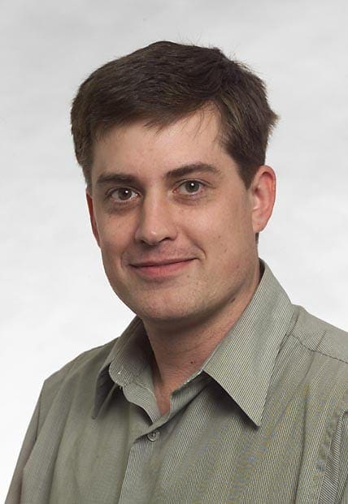
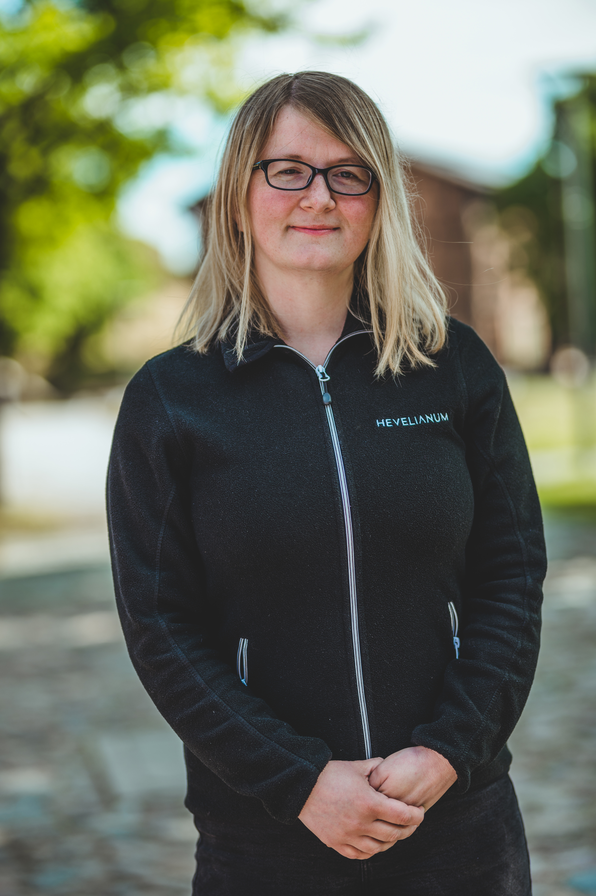
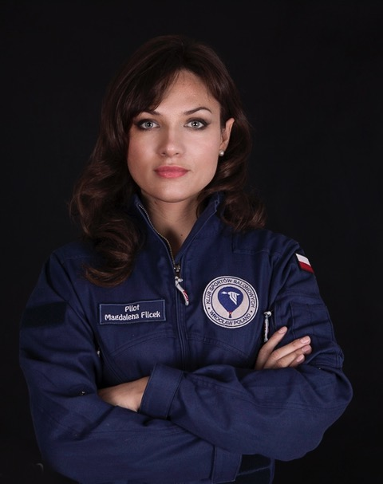
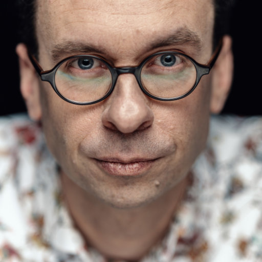
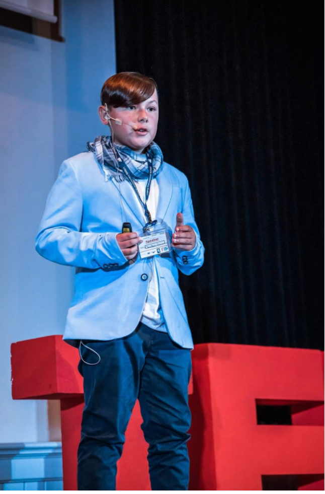
SKY Conference united people again in an iconic cinema in Wrocław. We all took a look at gratitude — which was the topic of the conference. One more time, we had a chance to seek new knowledge, possibilities of growth and inspire one another.

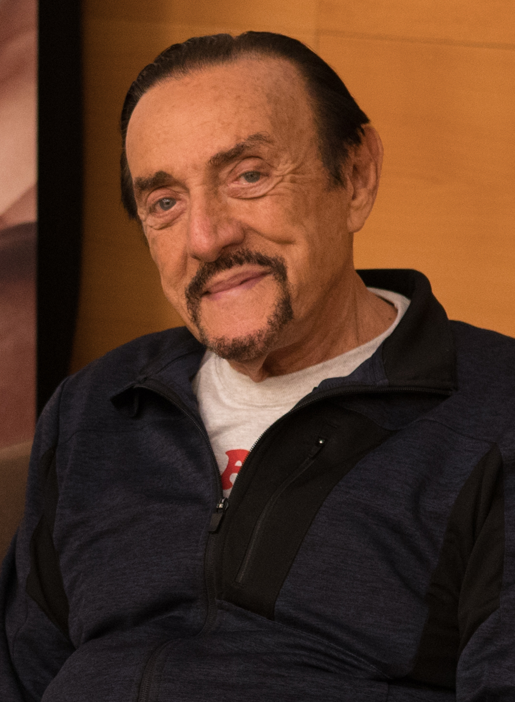
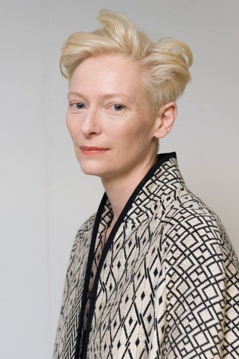
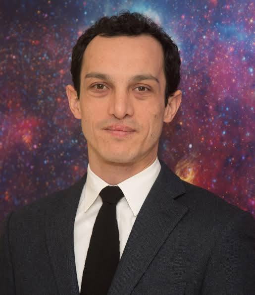
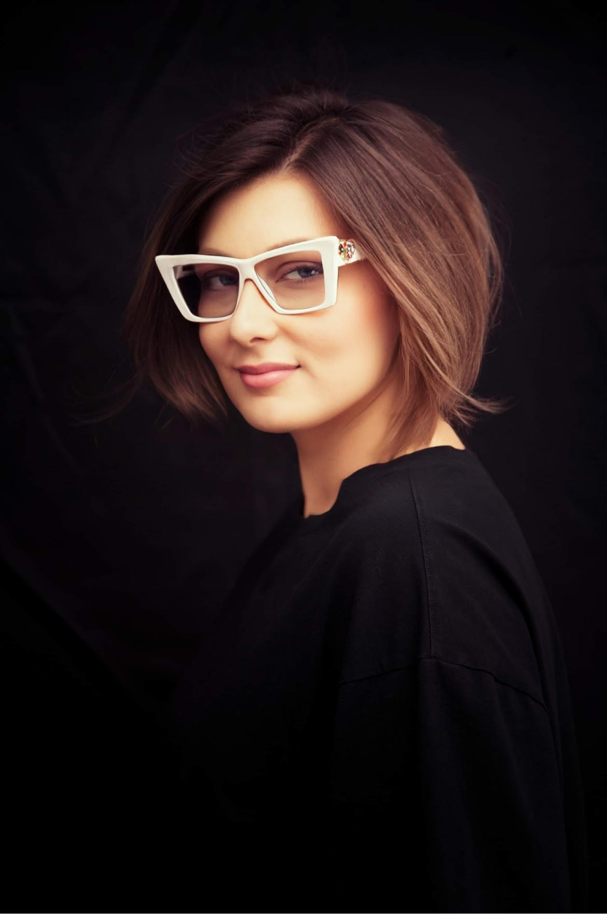
 INVSBL Family
INVSBL Family
Choose how you want to contribute to the next SKY Conference
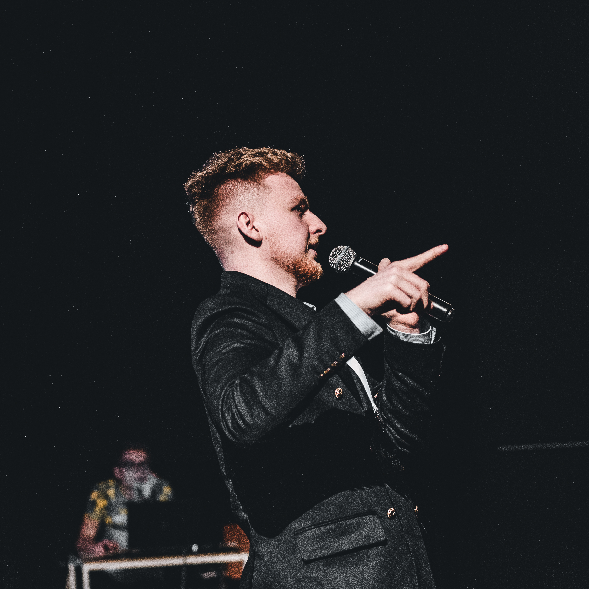
Share your knowledge, experience, and story with hundreds of young minds eager to learn and be inspired.
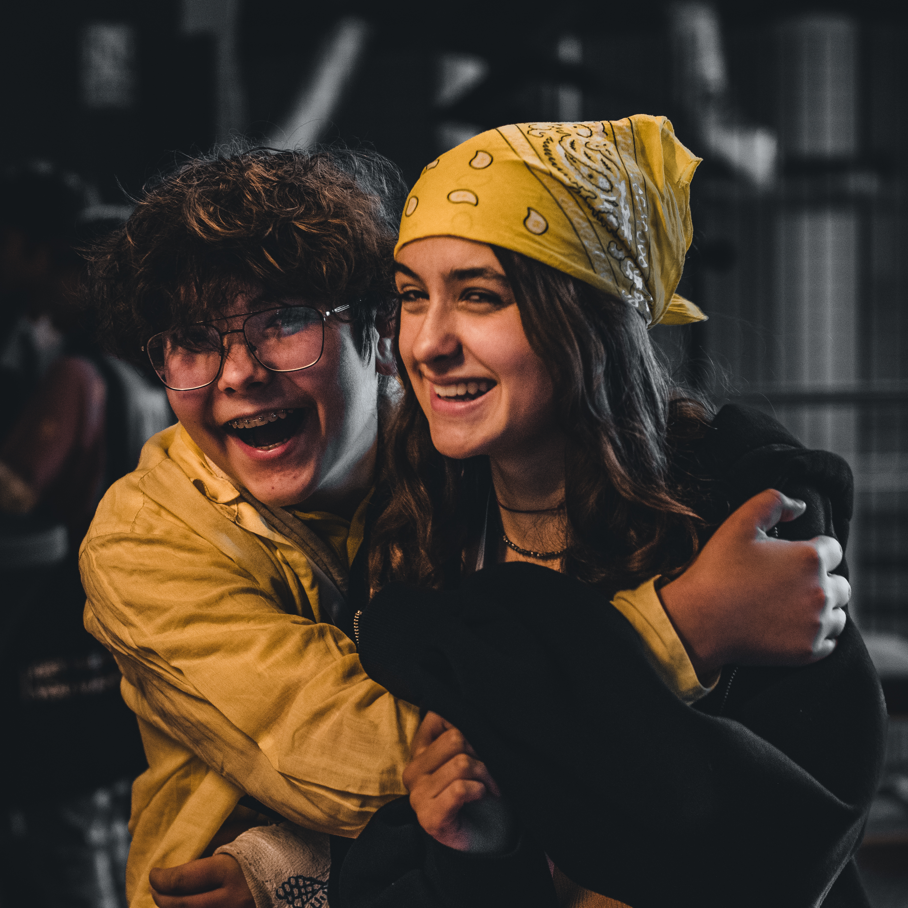
Join us for an unforgettable experience filled with inspiration, learning, and meaningful connections.
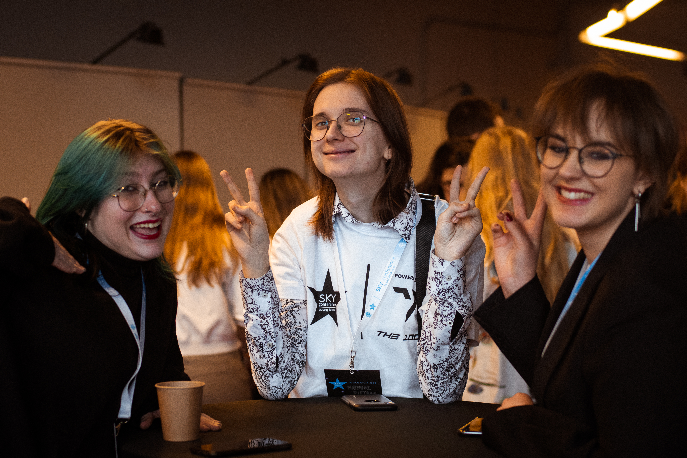
Become part of the team behind the magic. Help us create an incredible experience for everyone.
The visionaries who turned a bold idea into reality
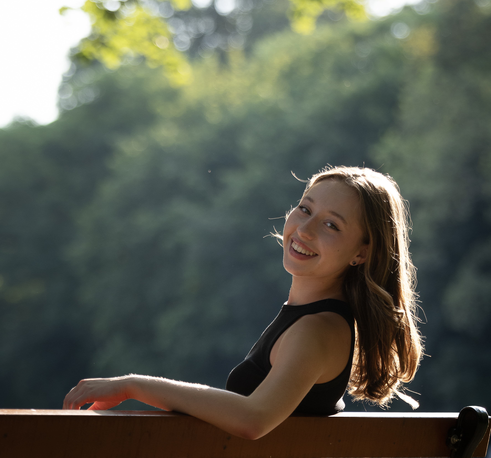
TEDx speaker and youngest spokesperson in Poland, Katarzyna has been a public speaker since age six. A world championship dancer and 2023 Wrocław Citizen of the Year (youngest recipient in history). She conducts workshops on soft skills and founded the Never Too Soon foundation to empower youth. Currently studying Global Arts, Culture & Politics at the University of Amsterdam.

FLEX program scholarship recipient and psychology enthusiast dedicated to community well-being. Completed Yale's psychology course and is co-author of Well-being (Dobrostan) – First Aid within UNICEF V4. Active in Polish Children's Academy since 2011 and participated in multiple international Erasmus+ projects including ECA, CAPS, and PAPUS.
Julia Mia Smuczynska was also an initiator and co-organised the first edition of SKY Conference in 2022.
Have questions? Want to partner with us? We'd love to hear from you!
Over the past editions, SKY Conference has hosted incredible speakers who shared their knowledge, passion, and stories. From scientists and artists to entrepreneurs and changemakers – our speakers embody the spirit of going beyond limits.